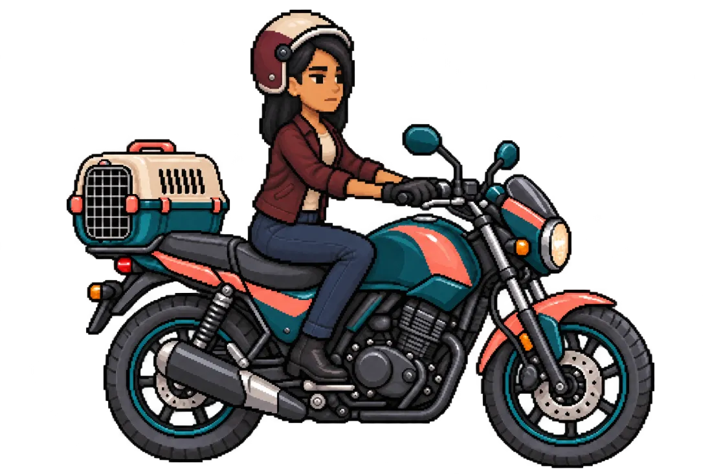

01
PRIMER RESCATE
Recorre el barrio, supera los obstáculos, baja de la moto y rescata tres gatitos antes de llegar a la primera meta.
ENCUENTRA 3 GATITOSUna aventura solidaria en familia
Recorre la ciudad en moto, encuentra gatitos que necesitan ayuda y completa una ruta de cuidado junto a Natalia y su hijo.

Una ruta con propósito
Natalia convierte un recorrido cotidiano en una misión de ayuda. En cada nivel debe detener la moto, acercarse con cuidado, alimentar a los gatitos y llevarlos a un lugar seguro.
Su hijo se incorpora al viaje para aprender que rescatar también significa respetar el tránsito, trabajar en equipo y tratar a los animales con cariño.
Tres capítulos, una sola misión
Cada etapa suma nuevos desafíos y continúa la historia hasta llegar al refugio.
Recorre el barrio, supera los obstáculos, baja de la moto y rescata tres gatitos antes de llegar a la primera meta.
ENCUENTRA 3 GATITOSEl hijo de Natalia se une al recorrido. Juntos deben respetar los semáforos, reunir ayuda y trasladar tres rescates.
RESPETA EL SEMÁFORONatalia y su hijo reúnen comida, alimentan a los gatitos y completan la entrega final junto a la veterinaria y el refugio.
MISIÓN FINALLos protagonistas
Personajes que se encuentran durante la ruta y dan sentido a cada misión.
Conduce, rescata y acompaña a cada gatito hasta ponerlo a salvo.
Se suma desde el segundo nivel y ayuda a servir comida con cariño.
Esperan alimento, leche y un traslado seguro durante la aventura.
Espera al final de la ruta para recibir el rescate y llevarlo al refugio.
Así avanza la misión
La aventura combina movimiento, decisiones y pequeñas acciones de cuidado.
Acelera, frena y salta los obstáculos mientras exploras cada tramo.
Detente ante el semáforo rojo y continúa cuando la ruta sea segura.
Baja de la moto, carga con cuidado y entrega comida o leche.
Entrega el gatito a la veterinaria y completa la misión en familia.
Momentos de la aventura
Una mirada a los rescates, la ayuda familiar y la llegada al refugio.
Ahora te toca a ti
Juega los tres niveles y acompaña a Natalia hasta completar todos los rescates.
Controles: D o → acelerar · A o ← frenar · W o ↑ saltar · E o ESPACIO rescatar · P pausar